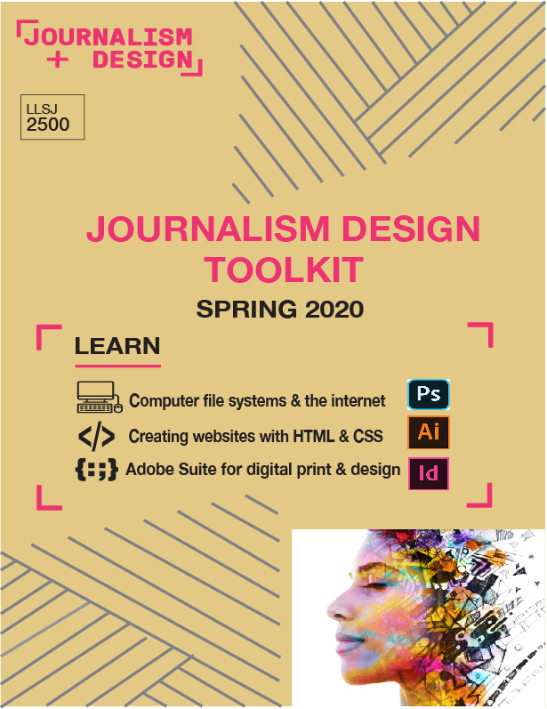

"

poster
I designed a poster to promote this class using Adobe Illustrator. I used images, logos, shapes, and text to describe what we learn in class. I incorporated the Journalism Design logo to get a feel for The New School look.